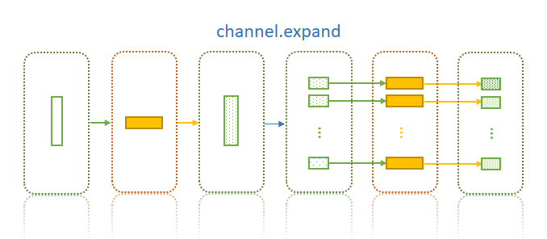
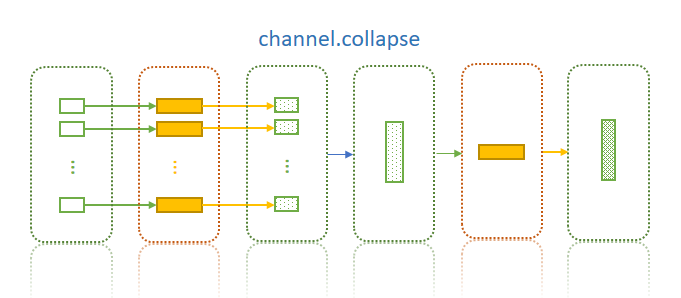

Channels
Channels
Channels are used to pass data from one process (an instance of Proc) to another. It is derived from a list, where each element is a tuple. So all python functions/methods that apply on list will also apply on Channel. The length a the tuple corresponds to the number of variables of the input or output of a proc.
# v1 v2 v3
c = [
(a1, b1, c1), # data for job #0
(a2, b2, c2), # data for job #1
# ...
]
proc:
p = proc()
p.input = {"v1,v2,v3": c}
| Job Index | v1 | v2 | v3 |
|---|---|---|---|
| 0 | a1 | b1 | c1 |
| 1 | a2 | b2 | c2 |
| ... | ... | ... | ... |
Initialize a channel
There are several ways to initialize a channel:
Note
Please use Channel.create(...) instead of Channel(...) unless each element is 'tuplized' properly.
Channel.create([1,2,3]) != Channel([1,2,3])
Channel.create([1,2,3]) == Channel([(1,), (2,), (3,)])
-
From other channels:
ch1 = Channel.create([(1, 2), (3, 4)]) ch2 = Channel.create('a') ch3 = Channel.create([5, 6]) ch = Channel.fromChannels(ch1, ch2, ch3) # channels are column-bound # ch == [(1, 2, 'a', 5), (3, 4, 'a', 6)]
-
From a file path pattern:
Useglob.globto grab files by the pattern, you may use different arguments for filter, sort or reverse the list: -
filter the files with type (
t):dir,file,linkorany(default), - sort them by (
sortby):size,mtimeorname(default) -
reverse the list (
reverse):False(default, don't reverse)c = Channel.fromPattern ("/a/b/*.txt", t = 'any', sortby = 'size', reverse = False)
-
From file pairs:
c = Channel.fromPairs ("/a/b/*.txt") # the files will be sorted by names and then split into pairs # c == [("/a/b/a1.txt", "/a/b/a2.txt"), ("/a/b/b1.txt", "/a/b/b2.txt")]
-
From file content:
Channel.fromFile(fn, header=False, skip=0, delimit="\t")For example, we have a file"chan.txt"with content:Read the file as a channel:A<tab>B<tab>C a1<tab>b1<tab>c1 a2<tab>b2<tab>c2
c = Channel.fromFile ("chan.txt") # c == [("A", "B", "C"), ("a1", "b1", "c1"), ("a2", "b2", "c2")] c = Channel.fromFile ("chan.txt", header=True) # c == [("a1", "b1", "c1"), ("a2", "b2", "c2")] # c.A == [("a1", ), ("a2", )] # c.B == [("b1", ), ("b2", )] # c.C == [("c1", ), ("c2", )] c = Channel.fromFile ("chan.txt", skip = 1) # c == [("a1", "b1", "c1"), ("a2", "b2", "c2")]
-
From
sys.argv(command line arguments):c == channel.fromArgv() # python whatever.py /a/b/*.txt # c == [("/a/b/1.txt",), ("/a/b/2.txt",), ("/a/b/3.txt",), ("/a/b/4.txt",)] # Make a multple-variable channel: # python whatever.py /a/b/1.txt,/a/b/2.txt /a/b/3.txt,/a/b/4.txt # c == [("/a/b/1.txt", "/a/b/2.txt"), ("/a/b/3.txt", "/a/b/4.txt")]
-
From command line argument parser: See command line argument parser for details.
from PyPPL import Channel, params params.a = 'a' params.b = 2 params.b.type = int params.c = [1, 2] params.c.type = list params.d = ['a', 'b'] params.d.type = list params.e = [] params.e.type = list ch = Channel.fromParams('c', 'e') # Raises ValueError, non-equal length ch = Channel.fromParams('c', 'd') # ch == [(1, 'a'), (2, 'b')] ch = Channel.fromParams('a', 'b') # ch == [('a', 2)]
Methods for channels
Get the length and width of a channel
chan = Channel.create ([(1,2,3), (4,5,6)])
#chan.length() == 2 == len(chan)
#chan.width() == 3
Get value from a channel
chan = Channel.create ([(1,2,3), (4,5,6)])
# chan.get() == 1
# chan.get(0) == 1
# chan.get(1) == 2
# chan.get(2) == 3
# chan.get(3) == 4
# chan.get(4) == 5
# chan.get(5) == 6
Repeat rows and columns
chan = Channel.create ([(1,2,3), (4,5,6)])
chan2 = chan.repCol()
chan3 = chan.repCol(n=3)
# chan2 == [(1,2,3,1,2,3), (4,5,6,4,5,6)]
# chan3 == [(1,2,3,1,2,3,1,2,3), (4,5,6,4,5,6,4,5,6)]
chan4 = chan.repRow()
chan5 = chan.repRow(n=3)
# chan4 == [(1,2,3), (4,5,6), (1,2,3), (4,5,6)]
# chan5 == [(1,2,3), (4,5,6), (1,2,3), (4,5,6), (1,2,3), (4,5,6)]
Expand a channel by directory
Channel.expand (col= 0, pattern = '*', t='any', sortby='name', reverse=False)
Sometimes we prepare files in one process (for example, split a big file into small ones in a directory), then handle these files by different jobs in another process, so that they can be processed simultaneously.

Caution
expandonly works for original channels with length is 1, which will expand toN(number of files included). If original channel has more than 1 element, only first element will be used, and other elements will be ignored.- Only the value of the column to be expanded will be changed, values of other columns remain the same.
Collapse a channel by files in a common ancestor directory
Channel.collapse(col=0)
It's basically the reverse process of expand. It applies when you deal with different files and in next process you need them all involved (i.e. combine the results):

Caution
os.path.dirname(os.path.commonprefix(...))is used to detect the common ancestor directory, so the files could be['/a/1/1.file', '/a/2/1.file']. In this case/a/will be returned.- values at other columns should be the same,
PyPPLwill NOT check it, the first value at the column will be used.
Fetch rows from a channel
Channel.rowAt(index)
chan1 = Channel.create ([(1,2,3,4), (4,5,6,7)])
chan2 = chan1.rowAt(1)
# chan2 == [(4,5,6,7)]
# Now you can also fetch multiple columus as a channel:
chan3 = chan1.rowAt([:2])
chan3 == chan1
Fetch columns from a channel
Channel.slice(start, length=None)
chan1 = Channel.create ([(1,2,3,4), (4,5,6,7)])
chan2 = chan1.slice(1,2)
# chan2 == [(2,3), (5,6)]
chan3 = chan1.slice(2)
# chan3 == [(3,4), (6,7)]
chan4 = chan1.slice(-1)
# chan4 == [(4,), (7,)]
Channel.colAt(index)
chan.colAt(index) == chan.slice(index, 1)
# Now you may also fetch multiple columns:
chan.colAt([1,2]) == chan.slice(1, 2)
Flatten a channel
Channel.flatten(col = None)
Flatten a channel, make it into a list.
chan = Channel.create ([(1,2,3), (4,5,6)])
f1 = chan.flatten()
# f1 == [1,2,3,4,5,6]
f2 = chan.flatten(1)
# f1 == [2,5]
Split a channel to single-width channels
Channel.split(flatten = False)
chan = Channel.create ([(1,2,3), (4,5,6)])
chans = chan.split()
# isinstance (chans, list) == True
# isinstance (chans, Channel) == False
# chans == [
# [(1,), (4,)], # isinstance (chans[0], Channel) == True
# [(2,), (5,)],
# [(3,), (6,)],
# ]
chans2 = chan.split(True)
# chans2 == [
# [1, 4], # isinstance (chans2[0], Channel) == False
# [2, 5],
# [3, 6],
# ]
Attach column names
Channel.attach(*names)
We can attach the column names and then use them to access the columns.
ch = Channel.create([(1,2,3), (4,5,6)])
ch.attach ('col1', 'col2', 'col3')
# ch.col1 == [(1,), (4,)]
# ch.col2 == [(2,), (5,)]
# ch.col3 == [(3,), (6,)]
# isinstance(ch.col1, Channel) == True
# flatten the columns
ch.attach ('col1', 'col2', 'col3', True)
# ch.col1 == [1,4]
# ch.col2 == [2.5]
# ch.col3 == [3,6]
# isinstance(ch.col1, Channel) == False
Map, filter, reduce
Channel.map(func)Channel.mapCol(func, col=0)ch1 = Channel.create() ch2 = Channel.create([1,2,3,4,5]) ch3 = Channel.create([('a', 1), ('b', 2)]) # ch1.map(lambda x: (x[0]*x[0],)) == [] # ch2.map(lambda x: (x[0]*x[0],)) == [(1,),(4,),(9,),(16,),(25,)] # ch3.map(lambda x: (x[0], x[1]*x[1])) == [('a', 1), ('b', 4)] # ch1.mapCol(lambda x: x*x) == [] # ch2.mapCol(lambda x: x*x) == [(1,),(4,),(9,),(16,),(25,)] # ch3.mapCol(lambda x: x*x, 1) == [('a', 1), ('b', 4)] # map & mapCol return an instance of Channel
Channel.filter(func)Channel.filterCol(func, col=0)ch1 = Channel.create([ (1, 0, 0, 1 ), ('a', '', 'b', '0'), (True, False, 0, 1 ), ([], [1], [2], [0]), ]) # Filter by the first column, only first three rows remained ch1.filterCol() == ch1[:3] # Filter by the second column, only the last row remained ch1.filterCol(col = 1) == ch1[3:4] # Filter by the third column, the 2nd and 4th row remained ch1.filterCol(col = 2) == [ch1[1], ch1[3]] # Filter by the fourth column, all rows remained ch1.filterCol(col = 3) == ch1 # Filter with a function: ch1.filter(lambda x: isinstance(x[2], int)) == [ch1[0], ch1[2]] # filter & filterCol return an instance of Channel
Channel.reduce(func)Channel.reduceCol(func, col=0)ch1 = Channel.create() # Raises TypeError, no elements ch1.reduce(lambda x,y: x+y) ch1 = Channel.create([1,2,3,4,5]) # Notice the different ch1.reduce(lambda x,y: x+y) == (1, 2, 3, 4, 5) # x and y are tuples ch1.reduceCol(lambda x,y: x+y) == 15 # x and y are numbers
Add rows/columns to a channel
Channel.rbind(*rows)
Each row can be either a channel, a tuple, a list or a non-iterable element(including string)
ch1 = Channel.create()
ch2 = Channel.create((1,2,3))
row1 = Channel.create(1)
row2 = Channel.create((2,2,2))
row3 = [3]
row4 = (3,)
row5 = (4,4,4)
row6 = [4,4,4]
row7 = 5
ch1.rbind(row1) == [(1, )]
ch2.rbind(row1) == [(1,2,3),(1,1,1)],
ch1.rbind(row2) == [(2,2,2)]
ch2.rbind(row2) == [(1,2,3), (2,2,2)]
ch1.rbind(row3) == [(3,)]
ch2.rbind(row3) == [(1,2,3),(3,3,3)]
ch1.rbind(row4) == [(3,)]
ch2.rbind(row4) == [(1,2,3),(3,3,3)]
ch1.rbind(row5) == [(4,4,4)]
ch2.rbind(row5) == [(1,2,3),(4,4,4)]
ch1.rbind(row6) == [(4,4,4)]
ch2.rbind(row6) == [(1,2,3),(4,4,4)]
ch1.rbind(row7) == [(5,)]
ch2.rbind(row7) == [(1,2,3),(5,5,5)]
-
Channel.cbind(*cols)ch1 = Channel.create([(1, 2), (3, 4)]) ch2 = Channel.create([5, 6]) ch1.cbind(ch2) == [(1, 2, 5), (3, 4, 6)] ch2 = Channel.create(5) ch1.cbind(ch2) == [(1, 2, 5), (3, 4, 5)] ch1.cbind([5, 6]) == [(1, 2, 5), (3, 4, 6)] ch1.cbind((5, 6)) == [(1, 2, 5), (3, 4, 6)] ch1.cbind("a") == [(1, 2, 'a'), (3, 4, 'a')] ch1 = Channel.create() ch2 = Channel.create([21, 22]) ch3 = 3 ch4 = [41, 42] ch5 = (51, 52) ch6 = "a" ch1.cbind(ch2, ch3, ch4, ch5, ch6) == [(21, 3, 41, 51, 'a'), (22, 3, 42, 52, 'a')] ch1.cbind(ch3).cbind(ch6) == [(3, 'a')]
-
Channel.insert(index, col)
ch1 = Channel.create([(1, 2), (3, 4)]) ch2 = Channel.create([5, 6]) ch1.insert(0, ch2) == [(5, 1, 2), (6, 3, 4)] ch1.insert(1, ch2) == [(1, 5, 2), (3, 6, 4)] ch1.insert(-1, ch2) == [(1, 5, 2), (3, 6, 4)] ch1.insert(None, ch2) == [(1, 2, 5), (3, 4, 6)] ch2 = Channel.create(5) ch1.insert(0, ch2) == [(5, 1, 2), (5, 3, 4)] ch1.insert(1, ch2) == [(1, 5, 2), (3, 5, 4)] ch1.insert(-1, ch2) == [(1, 5, 2), (3, 5, 4)] ch1.insert(None, ch2) == [(1, 2, 5), (3, 4, 5)] ch1.insert(0, [5, 6]) == [(5, 1, 2), (6, 3, 4)] ch1.insert(1, [5, 6]) == [(1, 5, 2), (3, 6, 4)] ch1.insert(-1, [5, 6]) == [(1, 5, 2), (3, 6, 4)] ch1.insert(None, [5, 6]) == [(1, 2, 5), (3, 4, 6)] ch1.insert(0, (5, 6)) == [(5, 1, 2), (6, 3, 4)] ch1.insert(1, (5, 6)) == [(1, 5, 2), (3, 6, 4)] ch1.insert(-1, (5, 6)) == [(1, 5, 2), (3, 6, 4)] ch1.insert(None, (5, 6)) == [(1, 2, 5), (3, 4, 6)] ch1.insert(0, "a") == [('a', 1, 2), ('a', 3, 4)] ch1.insert(1, "a") == [(1, 'a', 2), (3, 'a', 4)] ch1.insert(-1, "a") == [(1, 'a', 2), (3, 'a', 4)] ch1.insert(None, "a") == [(1, 2, 'a'), (3, 4, 'a')] self.assertEqual(ch1, [(1, 2), (3, 4)]) ch1 = Channel.create() ch2 = Channel.create([21, 22]) ch3 = 3 ch4 = [41, 42] ch5 = (51, 52) ch6 = "a" # Raises ValueError, when 1 is inserted, it is a 1-width channel, # then you can't insert a 2-width to it. ch1.insert(1, ch2) ch1.insert(0, ch2, ch3, ch4, ch5, ch6) == [(21, 3, 41, 51, 'a'), (22, 3, 42, 52, 'a')]
Fold a channel
Channel.fold(n = 1)
Fold a channel, Make a row to n-length chunk rows
For example, you have the following channel:
| a1 | a2 | a3 | a4 |
|---|---|---|---|
| b1 | b2 | b3 | b4 |
After apply chan.fold(2) you will get:
| a1 | a2 |
|---|---|
| a3 | a4 |
| b1 | b2 |
| b3 | b4 |
Unfold a channel
Channel.unfold(n=2)
Combine n-rows into one row; do the reverse thing as Channel.fold. But note that the different meaning of n. In fold, n means the length of the chunk that a row is cut to; will in unfold, it means how many rows to combine.
Copy a channel
Channel.copy()